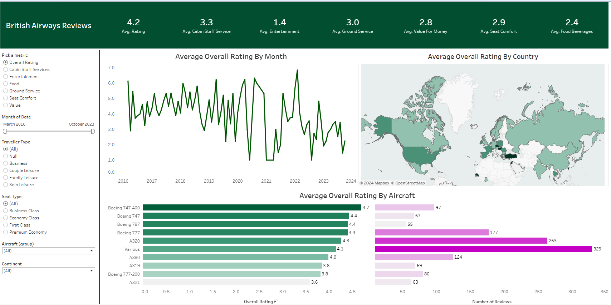

My fascination with numbers and the stories, they reveal sparked my journey into data analysis. Even
before the term "data analyst" entered my vocabulary, I was analyzing data for personal projects.
This passion ignited a fire within me to explore the vast world of data analysis. My hunger for
knowledge led me to online courses,
YouTube tutorials, intensive boot camps, and independent research.
Now, I leverage this passion to transform complex data into actionable insights. As a data analyst, I
delve into the world of information, uncovering patterns and trends that drive informed
decision-making.
Project Portfolio

In this project I take raw housing data and transform it in SQL Server to make it more
usable and understandable for analysis
It reveals property value trends, identifies investment opportunities in growing
neighborhoods, and assesses the impact of external factors on the real estate market.

I analyzed British Airways reviews with Tableau, uncovering passenger sentiment trends
by month and location. I even drilled down to aircraft-specific insights to help
optimize their fleet. Interactive dashboards with dynamic filters empower users to find what
matters most to them, driving data-driven decisions

In this project, I've included 10+ data analysis project show-casing my skills and experience
in data analytics using Python's library.

Explore professional insights through my Power BI project, revealing job sector
dynamics, salary trends, and my advanced data visualization skills.

In my Amazon project, I utilized Tableau to visually analyze data, unraveling insights
into sales and performance from fashion industry in India.
Bike
Sales Performance in Excel
Airbnb
Data Visualization using tableau
HR
Dashboard (PowerBI)
Diwali Sales Analysis
(Python & PowerBI Project)
Coffee
Sales Analysis: From Data Cleaning to Dashboard (Excel)
Netflix
(tableau)
My Activities

In this section, I showcase my journey learning SQL, from basic queries to advanced data
manipulation techniques like joins, aggregations, and window functions.

Power BI allows me to create interactive data visualizations and dashboards that effectively
communicate insights to stakeholders. I leverage this skill to transform complex data into
clear and actionable stories.

MS Excel is my go-to tool for data cleaning and wrangling. I use its powerful formulas and
functions to ensure my data is accurate and ready for further analysis.

Tableau empowers me to create clear and engaging data visualizations. I'm skilled in crafting
a variety of charts and graphs, including bar charts, line graphs, heatmaps, and maps, to
effectively communicate insights to a broad audience. Beyond basic visualizations, I can
build interactive dashboards that allow users to explore data independently through
filtering, drilling down, and interacting with various elements. This fosters a culture of
data-driven decision-making by empowering stakeholders to answer their own questions.

Python is a powerful tool in my data analysis arsenal. I leverage libraries like Pandas for
data cleaning and manipulation, and NumPy for numerical computations. Using these libraries,
I can efficiently handle missing values, outliers, and explore data through statistical
analysis. Furthermore, I can create custom data visualizations using libraries like
Matplotlib or Seaborn, allowing me to tailor visualizations to specific needs and uncover
hidden patterns within the data.
Skills
As a data enthusiast with a knack for decoding patterns, I bring expertise in analytics, turning
data into actionable insights. Let's unravel the stories hidden in numbers together.
- Data Cleaning and Preprocessing
- Data Visualization and Exploration
- Statistical Analysis
- Collaboration with Stakeholders
- People Management & Cooperation
- Data Automation with AI